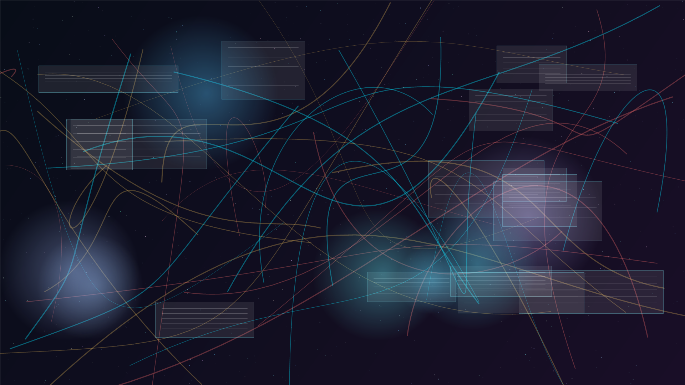

GPU Look
液態光譜 Shader
使用 WebGL fragment shader 在你的顯卡上即時產生流動光場。滑鼠位置會改變波紋中心。

Exhibits
使用 WebGL fragment shader 在你的顯卡上即時產生流動光場。滑鼠位置會改變波紋中心。
由瀏覽器產生合成音源，再用 AnalyzerNode 把頻譜變成會跳動的環形燈塔。
展品裡的節點會互相牽引，拖曳任一節點可以改變整個系統的拓樸。
Scroll Reactor
r = a cos(kθ)
Browser Console